CHARACTER & IP / 2026.05
海淀鸡娃

“海淀鸡娃”以在教育竞争中成长的中学生为创作对象，将“鸡”与“孩子”的视觉特征结合，塑造戴鸡形头套、穿宽大校服的角色。遮住上半张脸的头套与延伸至脚踝的衣摆，使面部表情和身体轮廓变得模糊，让形象承载一种熟悉而难以对应到具体个人的集体成长经验。
白色头套与蓝、紫、粉三种邻近色校服构成系列视觉，珠光质感则为日常校园符号加入梦幻气息。设计从草图、三视图与三维模型逐步转化为实物，采用白色树脂光固化打印，并经过打磨补土、丙烯上色和保护封层，形成展示型与盲盒尺寸两种模型。角色也成为扭蛋机装置、小程序与影像叙事之间共同的视觉线索。
CONCEPT
创作背景
在当今社会普遍存在的教育内卷与焦虑氛围中，面临高考的中学生群体仿佛无意间被卷入了一个“扭蛋机”游戏，金钱、时间和精力付出，最终的结果却无法预知。在梦境和潜意识中，作为“海淀鸡娃”的我仿佛不断看见：上下学的路口、地铁的扶梯、喜欢喝的饮料、朋友借来的伞、写不完的试卷、操场上的绿茵……而我自己，正穿着宽大的校服，在天桥上俯瞰这一切。作品希望通过视觉语言的表达，引起有共同感受“鸡娃”们的共鸣与思考。
CHARACTER DESIGN
形象建构


白色头套：标准化的隐喻
IP形象以“鸡娃”为核心概念，在形象建构上采用显性符号学策略。娃娃的头套选用纯白单色，这一色彩选择是一种隐喻：白色是工业化养鸡场中鸡的典型毛色特征，同时白色在文化语境中常与“标准化”“工业化”等意象相联结，隐喻当代教育体制下“鸡娃”如同实验样本般被批量培育的生存状态。
校服与轮廓：被模糊的个体
服饰语言的设计上，形象身着北京市海淀区中学生校服的经典配色——以白色为主基调，搭配高饱和颜色撞色。颜色选择了蓝色、紫色、粉色三个邻近色，具有系列感的同时，定下梦幻感的基调，并在实物质感上选择了珠光色，拉开与真实校服的区别。
校服版型使用“oversized”的处理，宽大的衣摆延伸至脚踝，与头套的圆形轮廓形成视觉上的连续性，整体形态趋近于鸡躯干的结构，从而模糊了人的特点。这种身体的“去辨识度”处理，暗示标准化教育模式下个体独特性的消解，即学生们在统一规训下逐渐失去了差异化的外在标识。


MAKING PROCESS
实物制作
在IP形象的实物呈现阶段，本研究综合考量了原型复杂程度、生产成本及展示需求，最终选定SLA光固化3D打印技术，并采用白色树脂作为基材。实物模型的构建流程遵循3D打印、打磨补土、丙烯上色、保护封层四个步骤。

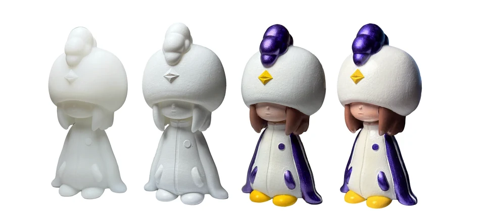

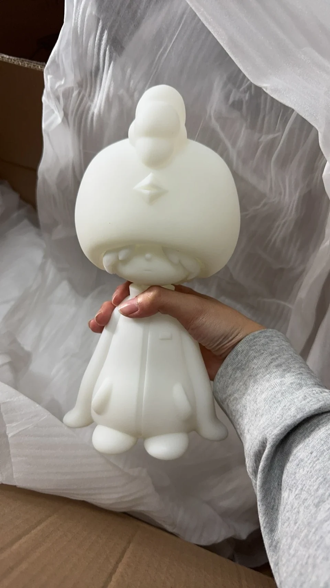

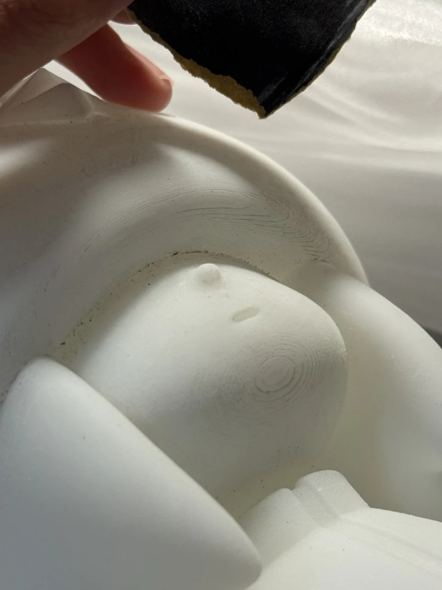

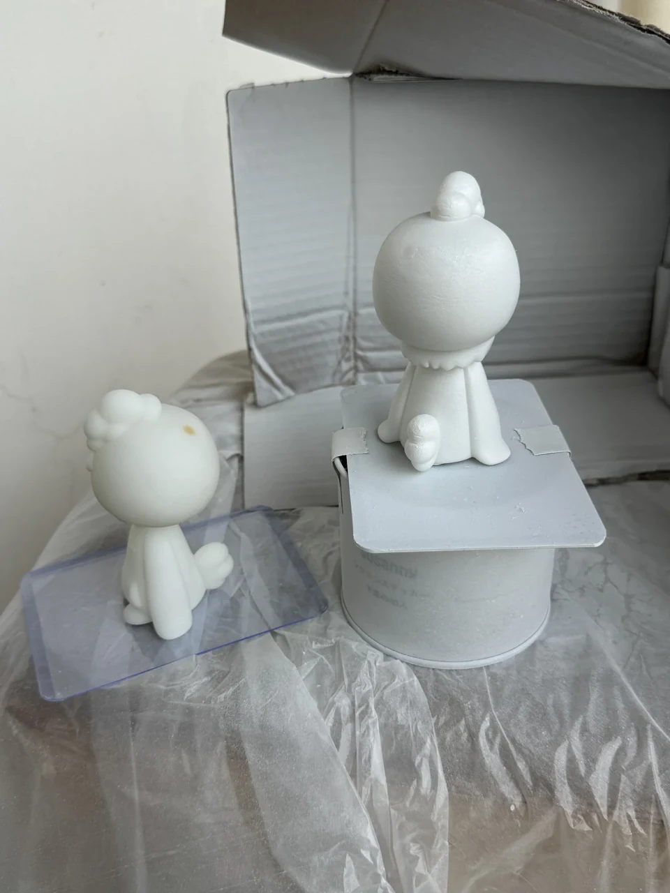

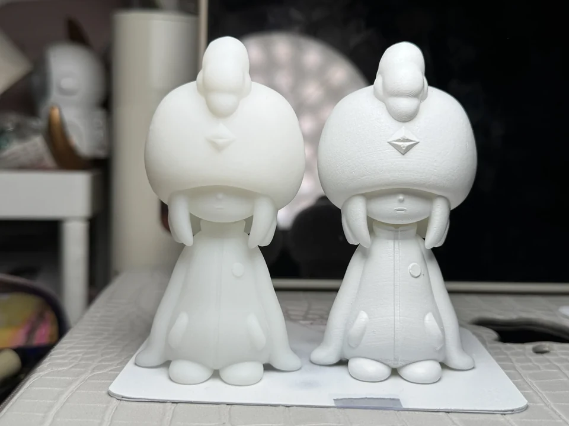

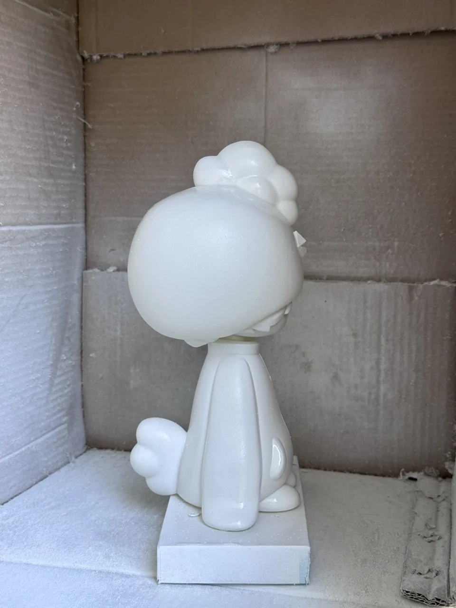

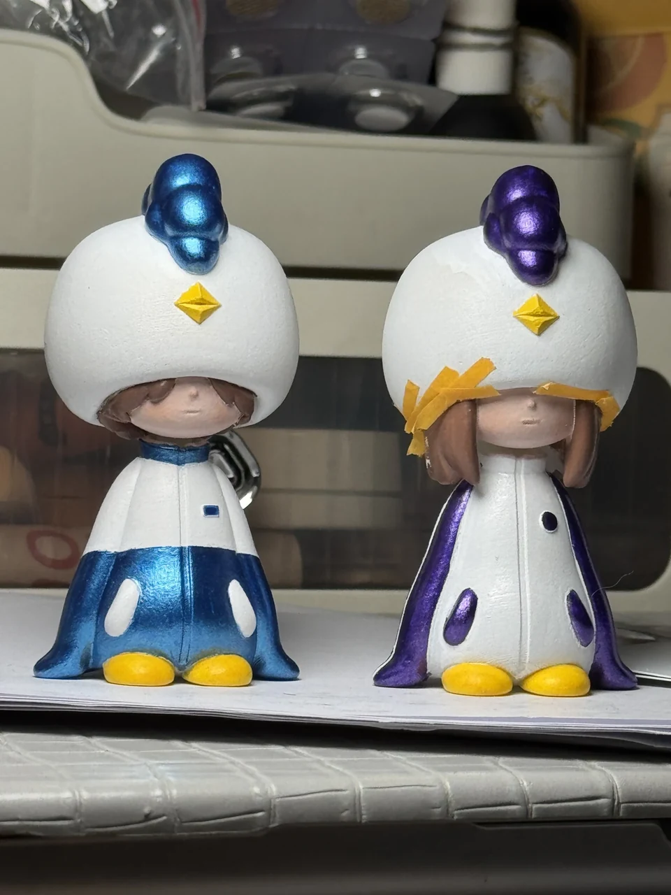

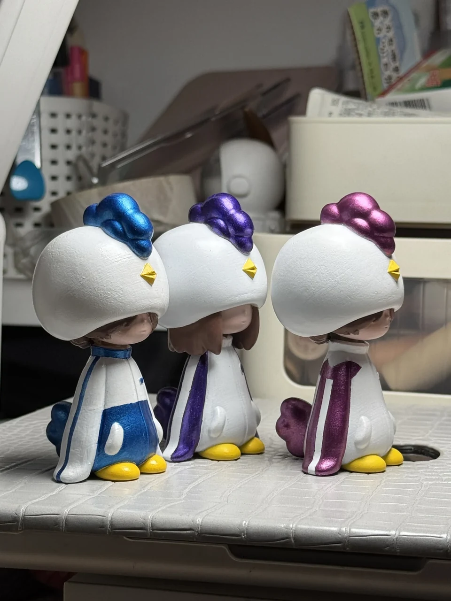

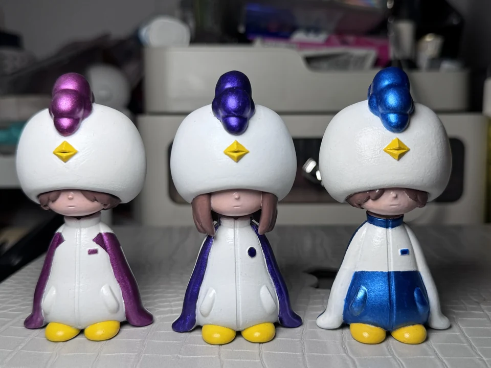

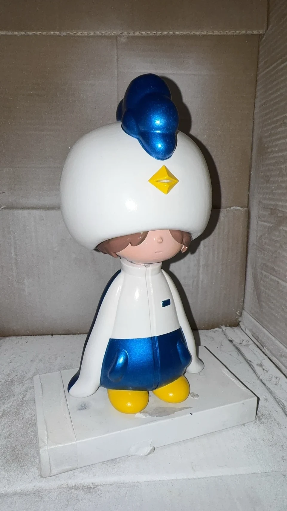

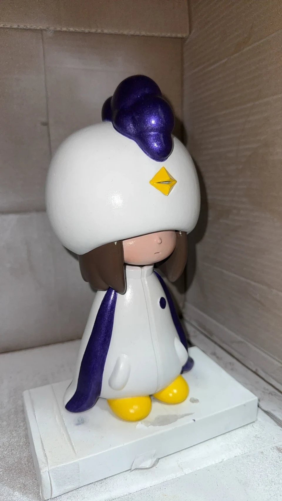
↔︎ 左右拖动浏览制作记录
EXHIBITION
展览实物
2026年清华大学美术学院毕业设计展-视觉传达系-《海淀鸡娃》
“鸡娃”IP形象设计是这一创作的核心。角色以孩子为主体，同时加入鸡冠、头套、宽大校服等视觉元素，使其既具有明确的识别度，又以被遮挡的面部、被宽大服装模糊的身体轮廓以及近似统一的外观，共同指向标准化教育环境中个体差异的消解。这个形象不是某一个具体学生的肖像，而更像是一种集体经验的视觉凝缩：它让观众能够在其中看到熟悉的影子，却又无法将其完全对应到某一个具体的人。


↔︎ 左右滑动查看展览实物